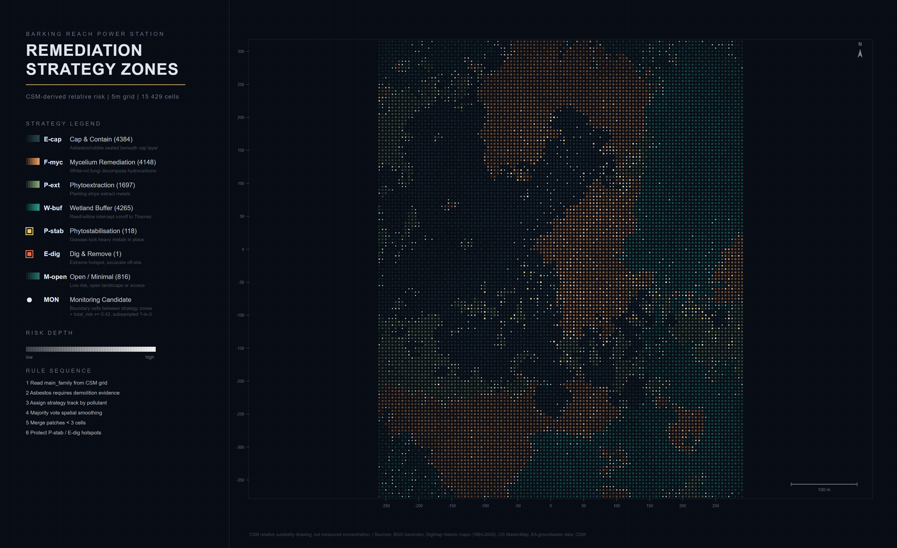

Frame
1995 — 2025
surface, 30 yr
A 30-year reading of one Thames brownfield — from program to ground.
Thirty years, three programs. Energy → markets → indeterminate. None of them occupied the ground for more than a decade.
Beneath that surface, 160 years of accumulation: hydrocarbons, metals, asbestos, ground gas — read as a 5 m × 5 m evidence grid.
Seven tracks. One deterministic rule sequence — each cell finds its program in the evidence beneath it.
